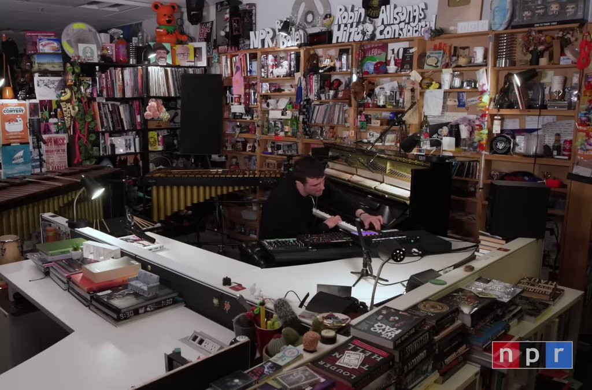
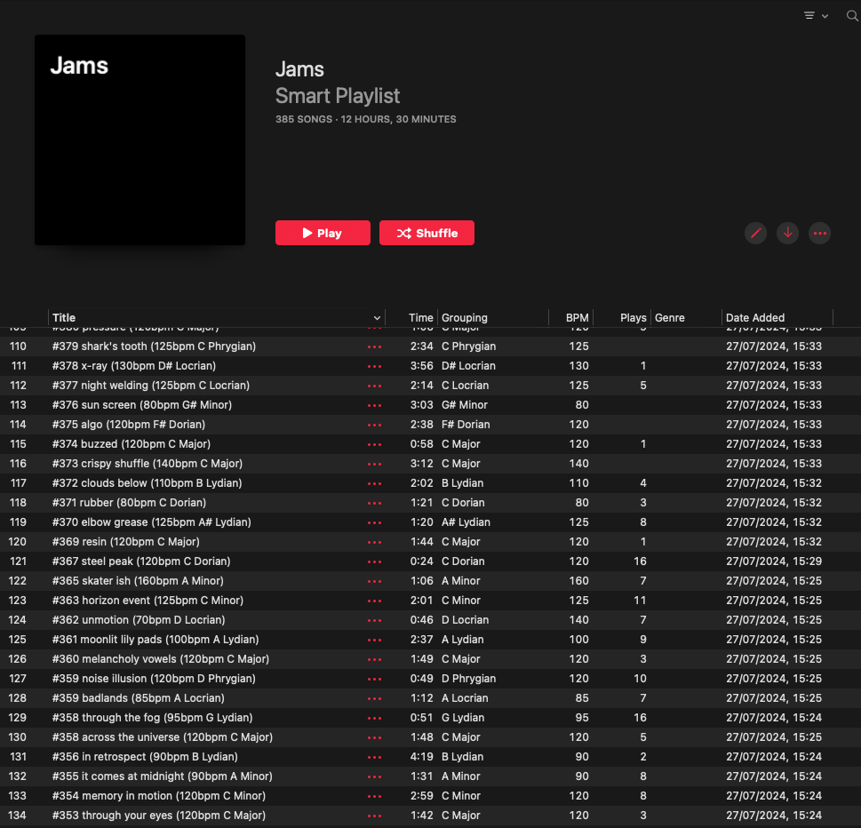
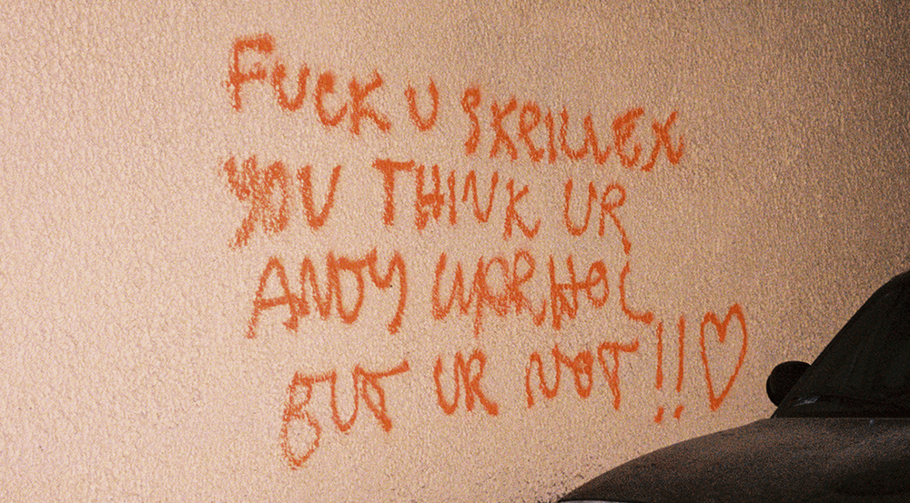
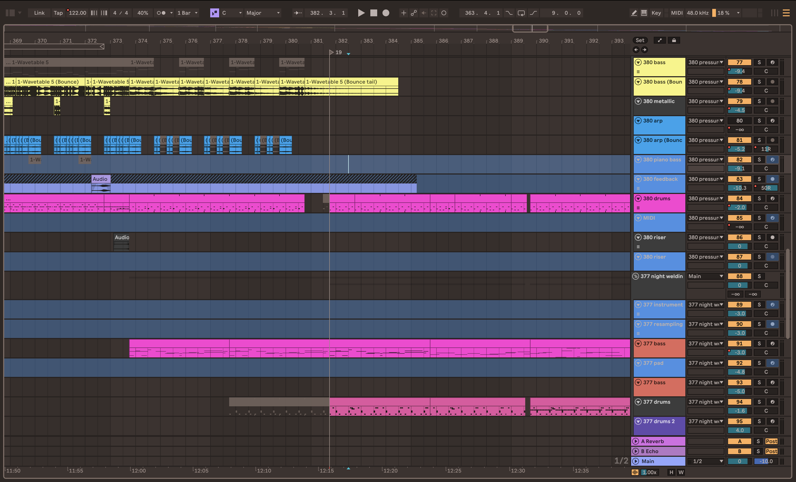
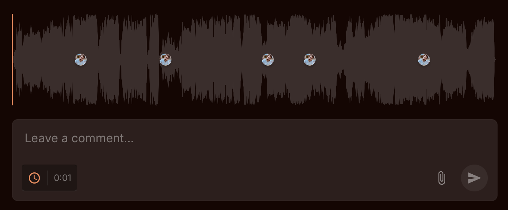

#3xx out now

Buy now on Bandcamp
Listen for free now on YouTube SoundCloud
Streaming on Apple Music
Live listening party 09/01/2025 18:00 GMT / 13:00 EST Listen here
I still feel some imposter syndrome when I call this an album.
Even though I spent over 120 hours on it, and even though it’s a full album length, there’s a part of me that doesn’t think it “counts.”
Permission to create
It was my music teacher, Alex, who first told me about Fred Again’s practice of quantity over quality when it comes to the early stages of songwriting.

Image courtesy of TinyDesk / NPR
For a long time, I thought of creativity as a skill to be mastered. Once I’d reached pro levels of creativity I’d be able to sit down at the piano / guitar / computer / easel, crack my knuckles, and produce a compelling piece of art every time.
But to Fred, the initial stages of creativity are all about creating in bulk - it’s a game of quantity, not quality - the more ideas you make, the more chance of having some good ideas in there.
On his episode of Tape Notes he explained his discovery that a song sketch made in 15 mins captured the essence of the idea just as well as spending 30 mins. The other 15 mins he would just spend tinkering and tweaking, not really adding anything new (and, sometimes, making it worse).
So rather than spending a couple of hours making 3-4 ideas, he’d instead make 7-8 ideas in the same amount of time. More ideas meant more chance of creating something great.
Since then, I’ve found that this quantity approach to creativity is far more prevalent than I expected. Many artists share this practice: create a lot, then pick out the pieces that speak to them the most.
Keeping on top of this pile of ideas
This totally changed my perspective on creative output. I started to make track ideas more often, genuinely not worrying about whether they were good or not.
Naturally this has led to a hard drive full of song ideas, usually around 1-2 minutes long, demonstrating a single idea or two complementary parts - like a verse / chorus or an A part / B part. I recently made my 500th such idea with Ableton, since I bought the software in December 2022.
This is far too many ideas to realistically ever see a ‘proper’ release, and I know that is entirely the point of this approach. However, there are dozens and dozens of these ideas which I feel deserve to be more than just bytes on a hard drive.
So I would semi-regularly listen to these ideas, to see how they felt to me and how that feeling changed with time. Using Apple Music, I sync all my jams across my devices in a playlist which I can occasionally shuffle through when I’m on long drives or walks.

Screenshot of my jams playlist in Apple Music
It felt good to revisit these ideas, to check in on them, and let them know I hadn’t forgotten about them. In hindsight I can see now that I was subconsciously putting them into 3 buckets as I listened:
- Ideas that I’d happily never hear again (or, appreciate anew years from now)
- Ideas where I knew clearly how I'd develop them into finished tracks
- Ideas in which I recognised potential, but for which I lacked the energy or inspiration to extend into ‘full’ tracks
Some of the ideas in Bucket #2 have gone on to become singles or collabs. And there are still plenty of ideas in this bucket that I roughly know how I would progress and finish as longer tracks, once I find the time.
But it’s the ideas in Bucket #3 that were niggling at me. The 1-2 min song ideas in this bucket didn’t necessarily represent potential for ‘full’ 3-4 min tracks, but they were still special in their own way.
They deserved to be heard.
What is an album?
Up until this point I never really thought releasing an album was for me.
More than anything, I just wasn’t sure how to put my music into a collection that made the kind of sense that the albums I listened to made. A coherent group of tracks with a similar genre, similar lengths, of a certain ilk.
I was just making stuff and having fun, and then challenging myself to release some of the things I made in small doses.
Then in early 2025 I heard Skrillex’s new album, which totally opened my mind to what an album could be.
A collection of 34 tracks, most 1-3 mins long (some under 1 min), blended together in one continuous 46 minute mix.

Album cover for Skrillex's FUS album
This style of album simultaneously appeals to a TikTok generation of listeners used to short and sweet dopamine hits, while also encouraging deep listening - with a voiceover on the first track requesting listeners “listen in full with no skips.”
The album is truly best enjoyed as a single multi-faceted experience, and I haven’t been compelled to playlist any of the tracks, because they work so much better as a whole piece.
My comment about attention spans isn’t meant to sound derogatory - I’m acutely familiar with how little bandwidth I have for new information, new perspectives and, sadly, new art these days.

Image courtesy of Mikhail Nilov
Like many people, I’m trying to address this, but the truth is that if I don’t know an artist and they haven’t been recommended to me by someone whose taste I trust, I need to be grabbed very quickly for something to make an impact on me.
On the flip side, once I am interested and do open that box, I’m disappointed if I find nothing else of substance inside. It’s one reason I left TikTok last year - I got tired of the superficial nature of everything - where I’d spend an hour scrolling and then struggle to tell you about a single video I saw afterwards.
So this idea of an album really appealed to me - one that is able to combine two opposites: quick transmission of ideas and rewarding deep exploration.
Permission to curate
Finally one day, when listening to the Skrillex album, I had an epiphany - I already had a shedload of short tracks! Maybe I could compile them into an album like this?
I’ve always been this way, for some reason, relying on other artists braver than me to blaze a trail, giving me permission to follow their lead and forge my own path.
Me speaking with Dr Rachel Connor about creativity and imposter syndrome
I think this comes from imposter syndrome - feeling like I’m not a “proper” creative person, which I’ve spoken about elsewhere. So seeing other artists break the mould and do things differently really opens my mind.
It means I’m regularly redefining what it means to be an artist.
Panning for gold
Getting excited, I started to sift through these ideas more intentionally.
With so many ideas (I think I had around 450 at the time) where was I to begin? I didn’t want to dive back into the earlier ideas, back when I was still learning the software and developing my skills - they’d need too much work to get them sounding release-ready.
So, rather arbitrarily, I picked the ideas numbered between 300 and 399.
I sat down and listened through them all, earmarking my favourites. I was listening for anything that I liked the sound of. Not necessarily tracks that would go well together, just tracks that I wanted to see the light of day.
Feeling audacious, I wanted as many tracks as possible at this stage (I definitely underestimated how long it would take to finish the album at this stage).
Hexadecimal by Spooqs, who provided input onto this release
Next came the process of deciding what order to put them in. I sought guidance from Spooqs on this, who had tackled a similar challenge on his album Hexadecimal. I took the advice to order tracks based primarily on BPM rather than mood, as listeners can adjust to quick shifts in mood more easily than an abrupt shift in tempo, and to follow a rough 3-part structure. These suggestions both worked really well and created a nicely flowing mix.
Once I got to this stage, I started to put all my tracks into one big Ableton set to work on them. This is where the fun exciting part started to slowly morph into something more challenging…
Challenges along the way
First, I quickly found that one project was too much for my CPU to handle, and split this out into 3 separate projects instead.
Next, I found that the process of transitioning between tracks was going to be more challenging than I thought, despite them being similar tempos. I was aiming for the kind of seamless compositional transitions of great DJ sets - where elements of one track blend into the next and, for a moment, you’re experiencing a fascinating crossover of two worlds.
I realise now how much consideration, effort and trial and error this takes... I needed to change some of the tracks to fit together better, and I extended some tracks to make things seem slightly less frantic. I got there in the end, largely through brute force rather than any clever technique, and was happy with the way the tracks flowed together.

A typical track transition on the album in Ableton Live
Creative burnout was real on this project, with so many hours clocked. I remembered back to my first EP release. Even though this was only 3 tracks, I spent so long on it - at least 30 versions of each track and I dread to think how many hours. By the end, I didn’t even like the tracks anymore, truly!
I had this in the back of my mind for this album project, and so I relied on certain methods to keep me motivated. I would post updates to social media which I found heartening.
I would occasionally post progress to my social media grid or stories to motivate myself to keep going
Ultimately though this took too long for me to justify doing too much, as it just took time way from working on the tracks.
I did start to feel a glimmer of resentment for the tracks. It was difficult to know when to stop. There was always more I could be adding, removing, changing, improving. When this happened, I knew that it was the perfect time to get some distance.
It was then that I sought feedback on the tracks from two good friends and fellow producers, Incertezza and Circul & Eas. It meant that I had the perfect excuse to not listen to it for a couple of weeks (bliss!) and leave it in the hands of other people for a while.

Screenshot of Samply, used to get feedback on my tracks
I used Samply to send the album to them (as one big audio file) which meant when they sent it back to me, I had a bunch of timestamped feedback to work through.
This was reinvigorating and getting encouragement and critical feedback on things to work on next gave me new life and motivation on the project.
Once I was happy with the release, I worked with friend and mastering engineer Matthew Hayter on finishing touches and achieving commercial loudness.
At this stage, I let it sit for a few weeks.
Reflections and release
I’d spent so much time working on the album, and I wanted to really honour that in the way that I shared it with the world.
But to be honest, I felt exhausted at this stage and wanted to get the album out and move on to other projects, but I knew I’d regret it if I didn’t do something meaningful to mark the release.
At a minimum, I knew I wanted to reflect on the experience and figure out what it meant to me. What I'd learned and how it had changed me.
Community, inspiration, and permission to call it art
Whether it was being given permission by Fred Again or Skrillex to approach my art in a new way, seeking advice or feedback from Spooqs, Circul & Eas and Incertezza, or feeling encouraged by social media likes - I learned the importance of community when working on creative projects.
They say 2026 is the year of moving past self-care into community care, and I’ve certainly experienced the value of community this year.
I learned that you never know who you’re going to inspire with your contributions to the world. None of the people above necessarily know how much of an inspiration they are to me, and I’ve undoubtedly forgotten countless more inspirations that helped me create this album.
Keep contributing your ideas to the world - you never know who you’re going to open the door for.
I learned that relinquishing control is good for me. I like things a certain way and I’m a bit of a control freak when it comes to my work and my art.
I’ve usually got an image of a perfect end result in mind, which leads me to believe the best way to get there is to apply skill, intention and focus.
But, thinking back to the origins of the album, they didn’t come from skill. They came from play. Making things for the fun of it. Skill, intention and focus are definitely important in finishing a project, but to start all I needed to do was play.
Next steps
I want to honour these things I've learned:
- Community care in learning and creating art
- How we can continue to inspire each other
- Relinquishing control and learning to play
And I've got an exciting project in mind for this which I'll be announcing soon. But in the meantime, I hope you enjoyed reading this and enjoy the album 🤍
Listen
Buy now on Bandcamp
Listen for free now on YouTube SoundCloud
Streaming on Apple Music
Live listening party on Bandcamp 09/01/2025 18:00 GMT / 13:00 EST Get notified